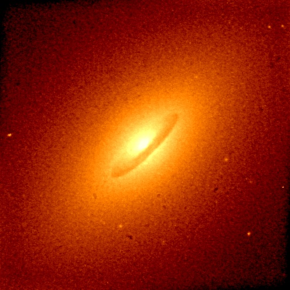
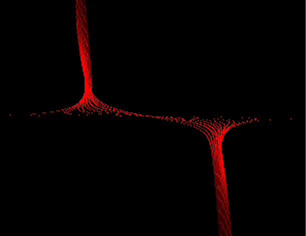

My postdoctoral research with Doug Richstone UMich) involved the search for supermassive black holes in nearby galaxies. The galaxies must be nearby in order to resolve the inner most stars of the galaxy which feel the gravitational pull of the black holes the most. To obtain spectra of these innermost regions we observed them with the Space Telescope Imaging Spectrograph (STIS) aboard the Hubble Space Telescope (HST). I reduced the data for 10 galaxies and presented them at the Jan 2000 AAS meeting. These spectra were of nearby early-type galaxies (E's and S0's, the Hubble Sequence). Stellar absorption lines from singly ionized Calcium are prominant in these near-infrared spectra. These lines were used to measure the stars' losvd (line-of-sight velocity distribution) for these galaxies. These losvd's can be used to deduce the orbits of stars and then the distribution of mass in the galaxy. For all 10 of our galaxies, we found a massive dark entity at the center and the most likely candidate for them is a black hole (SMBH). A member of our "Nuker" team, Karl Gebhardt, discovered a correlation between the mass of this SMBH and the velocity dispersion of the bulge stars.NOVA (and BBC's Horizons) has featured a TV program about our research. Here a description of the show and a transcript .
Gas Kinematics. The abovementioned results were derived from stellar kinematics, but I am also exploring the use of gas kinematics for measuring BH masses. The gas is identified by the emission lines it emits. The gas is collisional, unlike the stars, and so responds to other forces besides gravity. The systematic errors one will accrue by assuming a cold, disk of gas subject only to gravity are not well known. But I am working on several cases that will allow comparison of stellar and gas kinematics: NGC 4697, NGC 4258, and NGC 4061.
NGC 4697 (right) is an example of a galaxy with a organized dust disk which also has an orderly gas disk.

Detailed modelling of the STIS spectra include the PSF, slit width effects, slit offset from galaxy center, and misalignment of the slit. The image below shows a model 2D spectrum before convolution with the PSF. (Wavelength increases to the right, and position along the slit varies vertically.)
j-pinkney@onu.edu